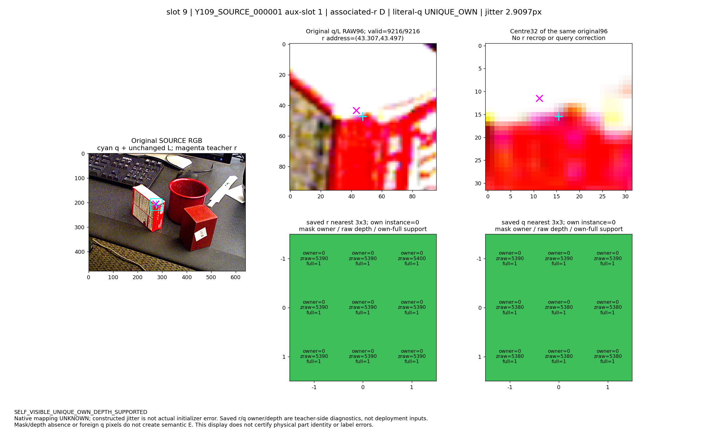
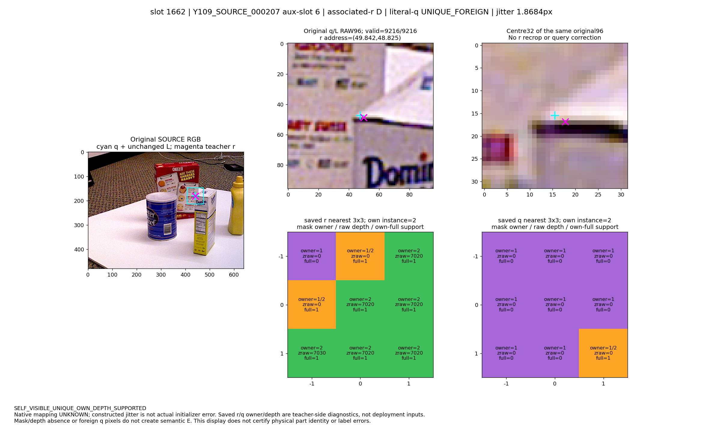
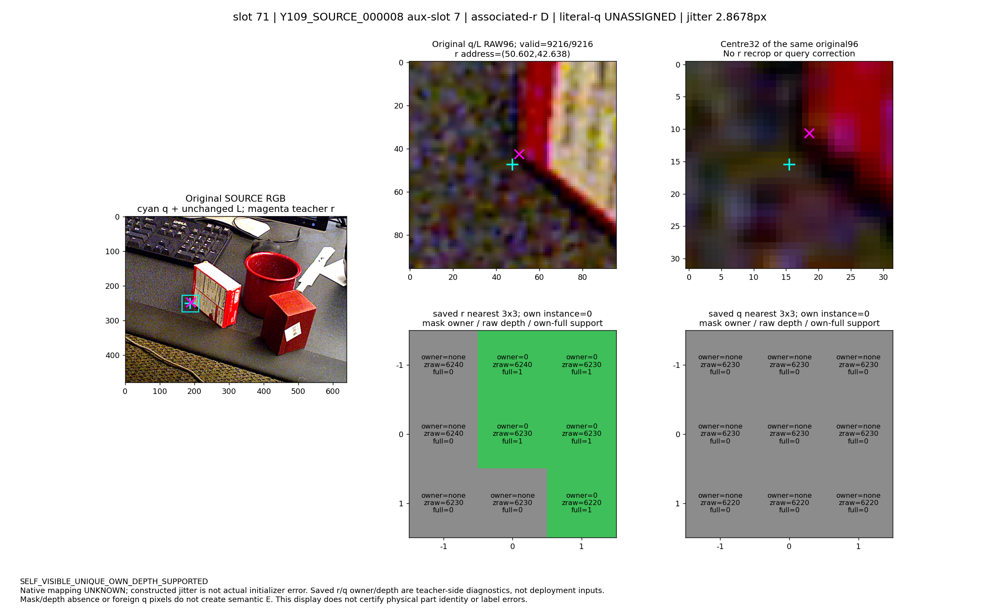
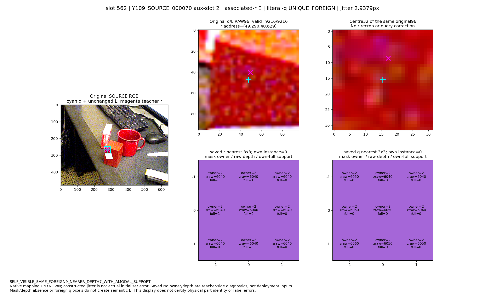
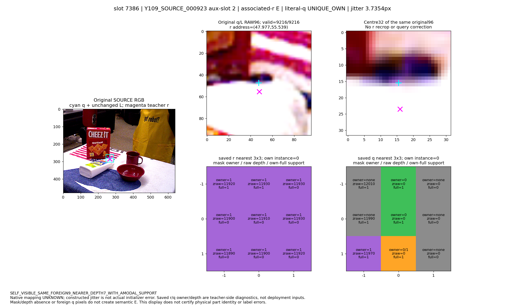
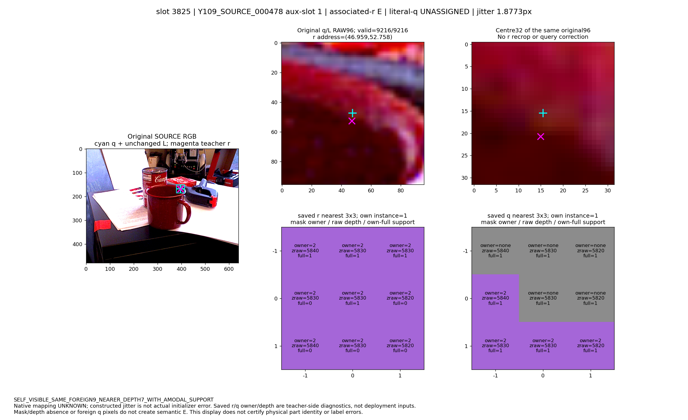

최대 6개 사전 고정 bucket입니다. Native mapping은 UNKNOWN이며, q는 GT 참조 r의 기존 구성 jitter입니다. q owner / depth는 배포 입력이나 새 D/E 정답이 아닙니다. 원 RGB를 r로 recrop하지 않았습니다. 관측 차이는 오라벨·모델 원인 증명이 아닙니다.

slot 9; 원 q/L crop 유지. Magenta r는 teacher 참조 표시입니다.

slot 1662; 원 q/L crop 유지. Magenta r는 teacher 참조 표시입니다.

slot 71; 원 q/L crop 유지. Magenta r는 teacher 참조 표시입니다.

slot 562; 원 q/L crop 유지. Magenta r는 teacher 참조 표시입니다.

slot 7386; 원 q/L crop 유지. Magenta r는 teacher 참조 표시입니다.

slot 3825; 원 q/L crop 유지. Magenta r는 teacher 참조 표시입니다.